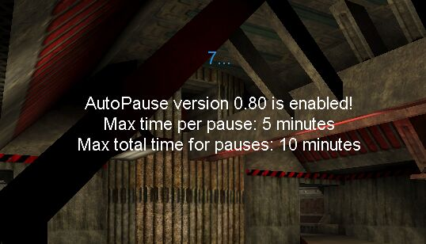
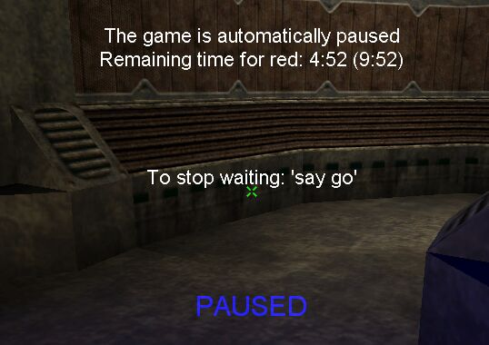

|
AutoPause 0.80 Many months ago I wrote a little utility that would automatically pause games when a player drops. I installed it on our server and we tested it once in a game vs [T], and it worked nicely.. But I never got around to actually releasing it.. But [T]Beefcake asked me a few days ago about it and since it was finished anyway I guess I can put it up for download.. Hopefully someone will find it useful. :) It can be found in the Download section, and it is installed on the server as a server actor, no client download necessary. When a teamgame is started in tournament mode it is activated.  When the game is started it will monitor the number of players to see if anyone drops, and instantly pause the game.  When the missing players enters the game again, it will count down from five and then unpause. It will also only allow the game to be paused for a certain amount of time per pause, and a total amount per game. These can be set by the admin before the countdown begins. The times are calculated separately for the teams so one team can't use up the others time. Also, if a team decides they don't want to wait for their missing player one of them can type 'say go' and the game will resume. The other time can also type 'say hold' to give the other team one more minute of time. An admin can also force an unpause of the game instantly by pressing pause as usual.
To install it on a server,
find the section [Engine.GameEngine] and add the line A spectator or player logged in as admin can use these commands before countdown: admin set autopause.apactor
enabled <true/false> admin set autopause.apactor
maxpause <minutes> admin set autopause.apactor
maxtotalpause <minutes> This little utility has not been tested extensively but it have been tested and it's simple code so I don't expect any problems to occur. If however something should go wrong the admin can always issue a 'killall apactor' to remove the AutoPause actor from the game, which will stop it from interfering. It will come back the next level though so if it is a confirmed problem it is probably good to disable it then. Oh well, if you find any problems or find it useful feel free to tell me. :) -Fnordia |